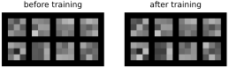
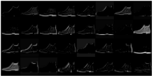

We now have every ingredient. From Chapter 12 we have layers, ReLUs and training by gradient descent; from Chapter 13, the idea of a small kernel slid across the image. A convolutional neural network (CNN) puts them together: its first layers are banks of kernels, and instead of designing the kernels as we did for coins and edges, we let gradient descent learn them. In this chapter we build one from scratch, in the same style as before, with nothing but a list of weight tensors, and train it on Fashion-MNIST.
Images with channels
A convolution layer takes a stack of images, called channels, and produces a new stack. The input to the first layer is a grayscale image, so one channel, and PyTorch wants that channel as an explicit axis. This time we do not flatten. (The device, montage_plot and get_batch carry over from earlier chapters, as before.)
import torch
import torch.nn.functional as F
from torchvision.datasets import FashionMNIST
torch.manual_seed(0)
def load(train):
ds = FashionMNIST('data', train=train, download=True)
X = torch.tensor(ds.data.numpy()[:, None] / 255.0, # channel axis
dtype=torch.float32)
return X.to(device), ds.targets.to(device), ds.classes
X, Y, classes = load(train=True)
X_test, Y_test, _ = load(train=False)
order = torch.randperm(len(X)).to(device) # shuffle, then set aside
X_val, Y_val = X[order[:5000]], Y[order[:5000]] # 5,000 for validation
X, Y = X[order[5000:]], Y[order[5000:]]
print(X.shape, X_val.shape, X_test.shape)torch.Size([55000, 1, 28, 28]) torch.Size([5000, 1, 28, 28]) torch.Size([10000, 1, 28, 28])
The validation set is 5,000 images this time, picked at random rather than taken from the end. Any set the network does not train on will do; 5,000 is enough to measure accuracy to about half a percentage point, by the square-root law of Chapter 9, and leaves more for training.
Each image now has shape (1, 28, 28): one channel, 28 rows, 28 columns. A color image would have three channels, and the outputs of a convolution layer with 32 kernels have 32, one feature map per kernel. A kernel in the second layer looks at all 32 maps of the first at once, so its weights have shape (32, 3, 3), and the second layer combines the first layer’s patterns into larger ones.
Max pooling
Between convolution layers we will shrink the feature maps with max pooling: cut each map into blocks and keep only the largest value in each.
x = torch.tensor([[1., 5., 0., 2.],
[3., 2., 1., 1.],
[0., 0., 4., 0.],
[7., 1., 0., 3.]])
print(F.max_pool2d(x[None, None], 2)[0, 0])tensor([[5., 2.],
[7., 4.]])Pooling halves the width and height of every map, which does three useful things. It cuts the amount of computation for the layers that follow. It lets each kernel in the next layer cover twice as much of the original image. And it builds in a little tolerance to position: if a pattern moves by a pixel inside a pooling block, the maximum stays the same. “There is an edge somewhere around here” is often all the next layer needs to know.
The network
Our network has two convolution layers of 32 and 64 kernels, each followed by a ReLU and max pooling, and then the familiar fully connected layers of Chapter 12 to turn the final maps into ten scores. The weights are created with the same He scaling as before; for a convolution, the number of inputs to each output is the number of input channels times the kernel area.
def conv_layer(n_in, n_out, k=3):
std = (2 / (n_in * k * k)) ** 0.5
W = torch.randn(n_out, n_in, k, k, device=device) * std
b = torch.zeros(n_out, device=device)
return [W.requires_grad_(), b.requires_grad_()]
def layer(n_in, n_out):
std = (2 / n_in) ** 0.5
W = torch.randn(n_out, n_in, device=device) * std
b = torch.zeros(n_out, device=device)
return [W.requires_grad_(), b.requires_grad_()]
w = (conv_layer(1, 32) + conv_layer(32, 64)
+ layer(64 * 7 * 7, 128) + layer(128, 10))
w0 = w[0].detach().clone() # keep a copy of the starting kernelsF.conv2d and F.linear take the weights and biases directly. Because F.linear multiplies by the transpose of its weight matrix, the fully connected weights are stored as (outputs, inputs) this time. The verbose flag lets us watch the shapes as a batch of five images flows through:
def model(x, w, verbose=False):
x = F.relu(F.conv2d(x, w[0], w[1], padding=1)) # 32 maps, 28x28
x = F.max_pool2d(x, 2) # 32 maps, 14x14
if verbose: print(x.shape)
x = F.relu(F.conv2d(x, w[2], w[3], padding=1)) # 64 maps, 14x14
x = F.max_pool2d(x, 2) # 64 maps, 7x7
if verbose: print(x.shape)
x = x.flatten(start_dim=1) # 3136 numbers
x = F.relu(F.linear(x, w[4], w[5])) # 128
if verbose: print(x.shape)
return F.linear(x, w[6], w[7]) # 10 scores
print(model(X[:5], w, verbose=True).shape)torch.Size([5, 32, 14, 14]) torch.Size([5, 64, 7, 7]) torch.Size([5, 128]) torch.Size([5, 10])
The padding=1 in each F.conv2d adds a one-pixel border of zeros around every map before the kernel slides over it, so the output keeps the size of the input. Without it, as we saw in Chapter 13, each convolution would shrink the map by two pixels.
Read it as a funnel. A image becomes 32 maps of , then 64 maps of , then one list of numbers, then 128, then 10. The spatial size shrinks while the number of channels grows: the network trades where for what.
print('convolutions:', sum(p.numel() for p in w[:4]))
print('total: ', sum(p.numel() for p in w))convolutions: 18816 total: 421642
Notice how few weights the convolutions need: under 19,000 for both layers, because each small kernel is reused at every position. Almost all of the network’s 420,000 weights are in the first fully connected layer.
Training
To measure accuracy we run the network over a whole set of images, a thousand at a time so as not to run out of memory, and without recording gradients. The helper is called accuracy_on because it takes images and labels, not scores like the accuracy of Chapter 11.
def predict(X, batch_size=1000): # in batches, to save memory
with torch.no_grad():
return torch.cat([model(X[i:i + batch_size], w).argmax(dim=1)
for i in range(0, len(X), batch_size)])
def accuracy_on(X, Y):
return (predict(X) == Y).float().mean().item()The training loop is unchanged; only the model is different.
optimizer = torch.optim.Adam(w, lr=0.001)
for step in range(6001):
x, y = get_batch(X, Y, 128)
loss = F.cross_entropy(model(x, w), y)
optimizer.zero_grad()
loss.backward()
optimizer.step()
if step % 1000 == 0:
val_acc = accuracy_on(X_val, Y_val)
print(step, round(loss.item(), 3), round(val_acc, 4))0 3.76 0.238 1000 0.255 0.9014 2000 0.169 0.9126 3000 0.154 0.9156 4000 0.12 0.9142 5000 0.114 0.918 6000 0.033 0.9072
The last column is accuracy on the 5,000 validation images, which training never sees. It climbs past 90 percent within the first thousand steps, peaks near 92 percent, and has slipped back a little by the end. One dip could be the ordinary wobble from one checkpoint to the next, or the start of memorizing; the clearer sign comes below, in the gap between training and validation accuracy. Once training is finished we measure all three sets, and look at the test set for the first and only time:
print('training: ', round(accuracy_on(X, Y), 4))
print('validation:', round(accuracy_on(X_val, Y_val), 4))
print('test: ', round(accuracy_on(X_test, Y_test), 4))training: 0.9735 validation: 0.9072 test: 0.909
On the test set the CNN scores 90.9 percent, against 88.3 for the deep fully connected network of Chapter 12. (The validation numbers, 90.7 here against 89, come from different validation sets, which is one more reason to compare on the shared test set.) That gain is bigger than it looks: the error rate falls from 11.7 percent to 9.1, so the CNN makes about a fifth fewer mistakes. And it got there by knowing something about images that the fully connected network did not, namely that nearby pixels go together and that a pattern means the same thing wherever it appears.
Notice the first line, though. On the images it trained on, the network is right 97.4 percent of the time, six and a half points better than on images it has never seen. With 420,000 weights and only 55,000 training images, it has room to memorize, and the gap is larger than the 4 points we saw for the fully connected network on clothing.
Which mistakes?
A single accuracy number hides a lot. A confusion matrix counts, for every true class (row), how often the network guessed each class (column). Correct answers lie on the diagonal.
guesses = predict(X_test)
confusion = torch.zeros(10, 10, dtype=torch.long)
for actual, guess in zip(Y_test.tolist(), guesses.tolist()):
confusion[actual, guess] += 1
print(confusion)tensor([[870, 1, 15, 5, 7, 1, 95, 0, 6, 0],
[ 3, 984, 0, 8, 1, 0, 3, 0, 1, 0],
[ 16, 1, 823, 4, 65, 0, 91, 0, 0, 0],
[ 26, 5, 12, 859, 42, 0, 56, 0, 0, 0],
[ 0, 1, 25, 8, 917, 0, 49, 0, 0, 0],
[ 0, 0, 0, 0, 0, 958, 0, 24, 2, 16],
[ 94, 2, 37, 12, 71, 0, 778, 0, 6, 0],
[ 0, 0, 0, 0, 0, 3, 0, 934, 1, 62],
[ 4, 1, 2, 2, 2, 2, 5, 2, 980, 0],
[ 0, 0, 0, 0, 0, 3, 1, 9, 0, 987]])Trousers, bags, ankle boots and sandals are nearly always right. The trouble is concentrated in one corner, among the tops:
mistakes = confusion.clone()
mistakes.fill_diagonal_(0)
for i in mistakes.flatten().argsort(descending=True)[:4].tolist():
actual, guess = divmod(i, 10)
print(f'{classes[actual]:>12} taken for {classes[guess]:<12}'
f'{mistakes[actual, guess].item()} times') T-shirt/top taken for Shirt 95 times
Shirt taken for T-shirt/top 94 times
Pullover taken for Shirt 91 times
Shirt taken for Coat 71 timesAt pixels in grayscale, the difference between a shirt and a T-shirt is a collar or a button placket a few pixels wide. Many people would struggle with some of these images too.
What the network learned
The 32 kernels of the first layer are tiny, only , but we can still draw them. We kept a copy of them before training, w0, so we can put the two side by side, with zero as middle gray in both panels (Figure 14.1).
before = w0[:, 0].cpu().numpy() # (32, 3, 3)
after = w[0][:, 0].detach().cpu().numpy()
hi = max(np.abs(before).max(), np.abs(after).max()) # zero: middle gray
plt.figure(figsize=(4.6, 1.5))
for i, (k, name) in enumerate([(before, 'before training'),
(after, 'after training')]):
plt.subplot(1, 2, i + 1) # the first 8 of 32
tiled = montage(k[:8], grid_shape=(2, 4), padding_width=1, fill=-hi)
plt.imshow(tiled, cmap='gray', vmin=-hi, vmax=hi)
plt.title(name)
plt.axis('off')
plt.show()
You might expect training to have turned random kernels into tidy edge detectors like the Sobel kernel of Chapter 13. It did not. Each kernel after training looks very much like the same kernel before. We can measure how much: the cosine similarity of two kernels is their dot product divided by the product of their lengths. It is 1 when the two have exactly the same pattern, whatever their size, and 0 when they have nothing in common.
def similarity(a, b): # 1 when two kernels share the same pattern
a, b = a.flatten(start_dim=1), b.flatten(start_dim=1)
return (a * b).sum(dim=1) / (a.norm(dim=1) * b.norm(dim=1))
s = similarity(w0, w[0].detach())
print(round(s.mean().item(), 3), round(s.min().item(), 3))0.974 0.898
On average each kernel is still 97 percent the same pattern it started with, and even the most changed one is at 0.90. Gradient descent nudged the kernels; it did not redesign them. Before reading too much into that, we should check how much it depends on where they started. Here is the same network trained again, with first-layer kernels started ten times smaller:
w_trained = w # keep the network we trained
w = (conv_layer(1, 32) + conv_layer(32, 64)
+ layer(64 * 7 * 7, 128) + layer(128, 10))
with torch.no_grad():
w[0] *= 0.1 # first kernels ten times smaller
start = w[0].detach().clone()
optimizer = torch.optim.Adam(w, lr=0.001)
for step in range(6001):
x, y = get_batch(X, Y, 128)
loss = F.cross_entropy(model(x, w), y)
optimizer.zero_grad()
loss.backward()
optimizer.step()
s = similarity(start, w[0].detach())
print(round(s.mean().item(), 3), round(s.min().item(), 3))
print('validation', round(accuracy_on(X_val, Y_val), 4))
w = w_trained0.814 0.541 validation 0.9184
Now the kernels move a good deal more, to an average similarity of 0.81 and as low as 0.54, and the network does at least as well on the validation images (91.8 percent against 90.7; with one run of each, a point is within the noise). So part of the reason the kernels barely moved is simply that they started large: the same-sized steps change a large kernel’s pattern less. The other part is real. Random kernels are already a reasonable set of detectors, as Figure 13.6 suggested: each responds to some mixture of brightness and edges in some direction, and the network does about as well whether it keeps them or reshapes them. With 32 of them, the later layers have plenty to work with, and the rest of the network learns how to use what they report. In big networks trained on millions of color photographs, the first-layer kernels end up looking quite different, as we will see in the next chapter.
What the kernels do is easier to see in the feature maps they produce for an actual image (Figure 14.2).
image = X_test[:1]
with torch.no_grad():
maps = F.relu(F.conv2d(image, w[0], w[1], padding=1))
print(classes[Y_test[0]], maps.shape)
maps = maps[0].cpu().numpy() # (32, 28, 28)
montage_plot(maps, size=4.6, grid_shape=(4, 8))Ankle boot torch.Size([1, 32, 28, 28])

Each map is the boot seen through one kernel. Some respond to the whole boot, some mostly to the sole, some to its outline along the top, and a few are nearly blank for this image. The second layer combines these maps, and its kernels can respond to arrangements of them: corners, curves, a sole meeting an upper. That progression, from simple responses to parts to objects, becomes much more striking in a much bigger network. In the next chapter we open one up.